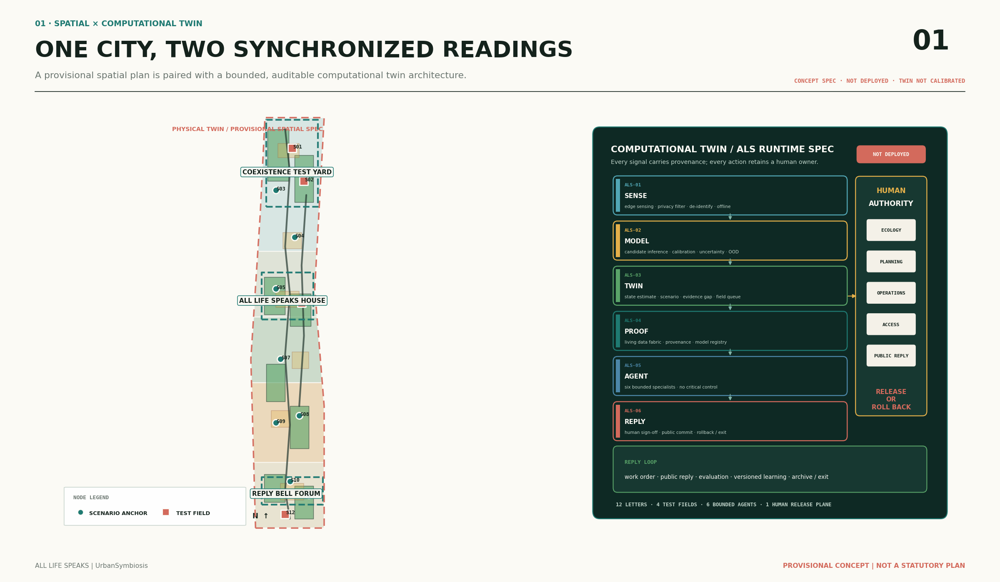
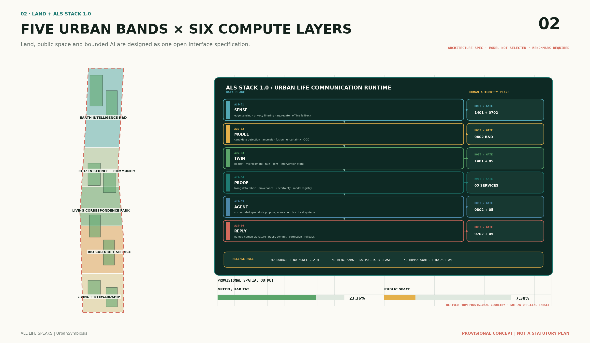
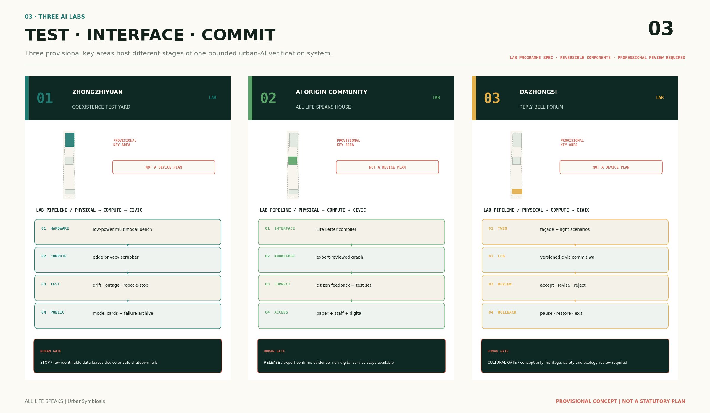
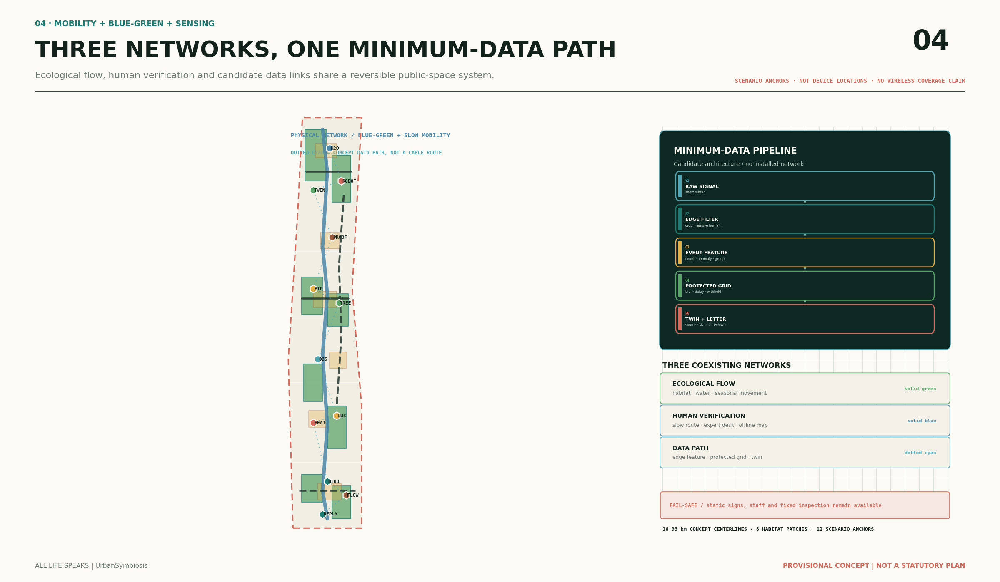
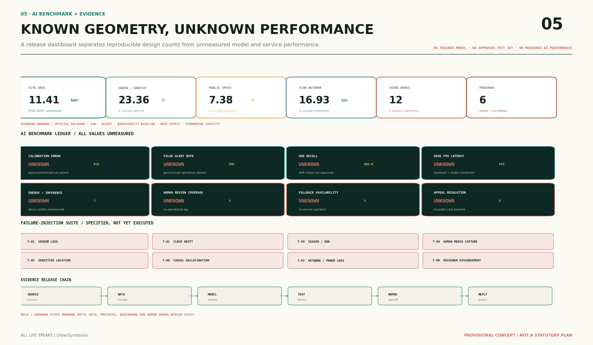

Sense
Edge sensing, device-side privacy filtering, de-identification, aggregation and offline fallback.
ALS STACK 1.0
An open environmental and multispecies AI governance specification for the Jingzhang corridor.
AI does not speak on behalf of species. It compiles environmental signals into public letters with provenance, version, uncertainty, named human responsibility and rollback status.
CONCEPT SPECNOT DEPLOYEDBENCHMARK REQUIRED
The physical reading is a provisional life-communication spine derived from the submitted geometry. The computational reading specifies sensing and edge privacy, candidate models, state twins, evidence fabric, bounded agents and human-signed replies. Every boundary remains provisional; no field data have been connected and the twin has not been calibrated.

Edge sensing, device-side privacy filtering, de-identification, aggregation and offline fallback.
Candidate multimodal inference, calibration, uncertainty and OOD handling; model not selected.
Habitat, microclimate, rainwater, lighting and intervention state; twin not calibrated.
Living data fabric, provenance, versions, uncertainty records and model registry.
Six bounded professional assistants propose options but never control critical systems.
Named human sign-off, public commit, correction, rollback or exit.
Specified architecture does not mean deployment. Models, hardware, interfaces, thresholds and performance must be selected and verified separately.


Multimodal devices, edge privacy, model drift, outage, robot emergency stop and failure injection.
Life Letter compiler, knowledge graph, public correction, expert labels and non-digital service.
Lighting and facade scenario twins, versioned state wall, accept/revise/reject/rollback records.

Nodes are scenario anchors, not device installation points. The dotted cyan trace is a conceptual data path, not a cable alignment or coverage claim. Buildings and roads express only reversible prototype and connection intent.
{
"letter_id": "LETTER-XXX",
"signal_domain": "environmental",
"space_feature_id": "SCENE-XXX",
"model_family": "candidate_not_selected",
"model_version": null,
"confidence_status": "benchmark_required",
"ood_flag": "unknown",
"source_provenance": "required",
"human_reviewer_role": "named_domain_role",
"fallback_mode": "manual_or_fixed_rule",
"decision_status": "verification_required"
}AI may detect candidates, flag anomalies, retrieve evidence and draft options. It may not approve plans, issue engineering findings, diagnose health, predict policing needs, enforce rules, close cases or directly control drainage, fire, traffic-signal or other critical systems.
SOURCEVERSIONOODHUMANFALLBACK
Organizes water and microclimate anomalies and review queues; never creates compliance or health conclusions.
Combines candidate tree, bird, insect, soil and small-fauna signals without exposing sensitive locations.
Drafts nature-based asset inspection queues; cannot close cases or control critical facilities.
Checks provenance, version, OOD and failure records; cannot confer professional approval.
Retrieves only registered public material, preserves minority views and never treats drafts as rules.
Combines verified letters and exposes conflicts; cannot approve, enforce, fund or close cases.
Ecology, planning, operations, accessibility and public-governance roles decide release, revision, rollback or exit.

| Benchmark | Current status | Missing evidence |
|---|---|---|
| Calibration error, false-alert rate and OOD recall | UNKNOWN | BENCHMARK REQUIRED | Approved field dataset and labeling protocol |
| Edge latency and energy per inference | UNKNOWN | HARDWARE NOT SELECTED | Model, chip, power and outage tests |
| Human review and non-AI fallback | UNKNOWN | NO OPERATIONS LOG | Operating ledger, service hours and appeal records |
| Phase | Projects | Release condition |
|---|---|---|
| 01 Build baseline | Boundary verification, ecological baseline, tree and facility ledgers | Sources, licences, sampling plan and named professional owner complete |
| 02 Reversible tests | Coexistence Test Yard, Life Letter Post Office, Climate Station and component library | Privacy, safety, accessibility and ecological professional review |
| 03 Evaluate or exit | Annual Reply Book, failure archive and scale/revise/pause/exit recommendation | Public appeal, human sign-off and reproducible evidence |
agent.1 brandagent.2 global ecologyagent.3 scenario governanceagent.4 public landmarksagent.5 cultural narrativeagent.6 annual operations
Spatial unknowns: official polygons, statutory FAR/height, ecological baseline, causal heat effect and stormwater capacity. AI unknowns: calibration, false alerts, OOD, latency, energy and real service performance.
Project notice, Agent Taskbook, provisional-boundary note, urban-design guidance, green-space planning standard, accessibility code, complete-street guidance and disaster-prevention park standards.
TreesSG/ENTS, GreenTwins, Urban ReLeaf, Array of Things, RESILIO, AMMOD, BirdNET and SlothBot. Mechanisms and facts are cited without copying assets or implying partnership.
The provisional boundary supports concept communication only. Land use, buildings, roads, green space, public space and phasing are conceptual and must be recomputed when authorized data arrive.